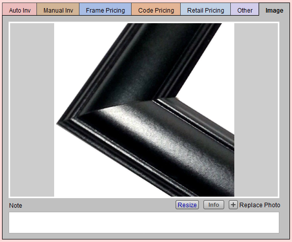
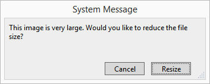
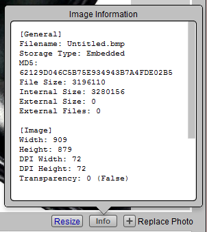
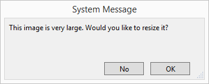
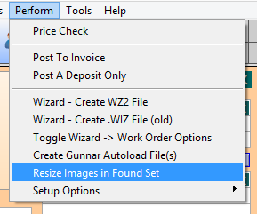
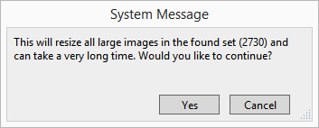

Resize Digital Images
Digital images can be stored in many different files in FrameReady. Use these steps to resize them to more manageable dimensions where the use less storage space.
-
Digital images can often have large file sizes. When added to FrameReady, they can easily inflate your database files, consume extra storage space on the hard drive, and take longer to copy to a safe location.
-
FrameReady 12.2.2 and higher can help you resize images to 600Kb in size to help keep your database size manageable.
-
Use the Resize button to scale the image down to a useful size for storage.
How to Resize a single Digital Image in FrameReady
This feature can be found in:
-
Price Codes > Image tab
-
Products > Image tab
-
Contacts > Artists tab
-
Work Order > Picture tab
-
Click Add a Photo to import a digital image, or drag and drop the image onto the grey area.

-
When FrameReady determines that an image is very large, an alert appears.

-
We recommend that you click Resize. This action changes the size of the image which, in turn, uses less storage space in the database.
If you choose Cancel, then a Resize button appears on the layout (below the photo) and you can use this now or later. -
Click the Info button for general image information, including the file size.

-
Use the Resize button to scale the image down to a useful size for storage.

-
In this instance, the original photo was 3,196,110 bytes (or 3 MB). After resizing, the image is 405,709 bytes (or less than half a MB).
-
You may use the Note field for things such as moulding is prone to flaws, wax finish is hand rubbed.
Tip: To delete an unwanted image, click on the image and press the Delete or Backspace key on your keyboard, or right-click the image and choose Cut.
How to Resize a Batch of Digital Images
Use this feature to help reduce the file size of your FrameReady Data files. Smaller file sizes are easier and faster to work with and to backup.
-
Perform a find for the records with images that you wish to resize.
You can do this in: Work Orders, Products, Price Codes and Contacts. -
When you have your Found Set, click Perform (in the menu bar) and choose Resize Images in Found Set.

-
The dialogue that appears also informs you of the size of your Found Set (2,730 as seen above).

-
Click Yes to begin the operation.
Tip: If you wish to resize a large Found Set, note that it may take a long time. We recommend using one of your less-used FrameReady workstations or beginning the process at a time when the computer will not be needed for use.
© 2023 Adatasol, Inc.